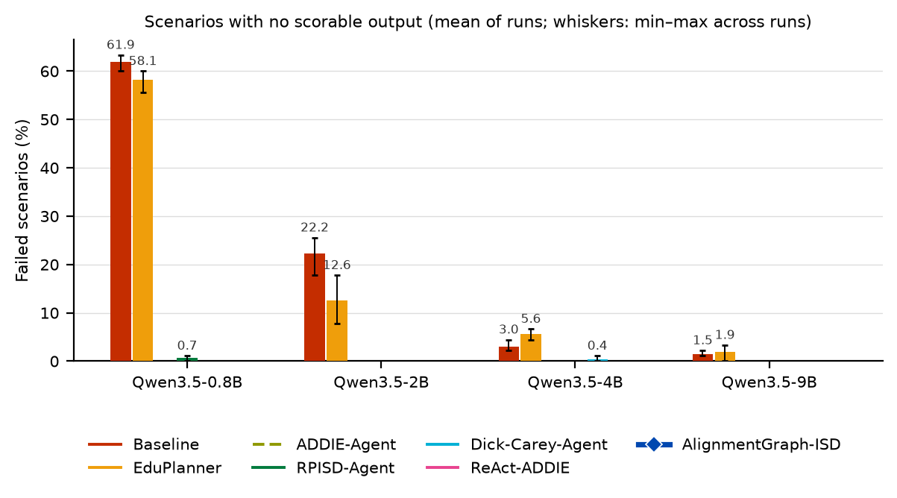
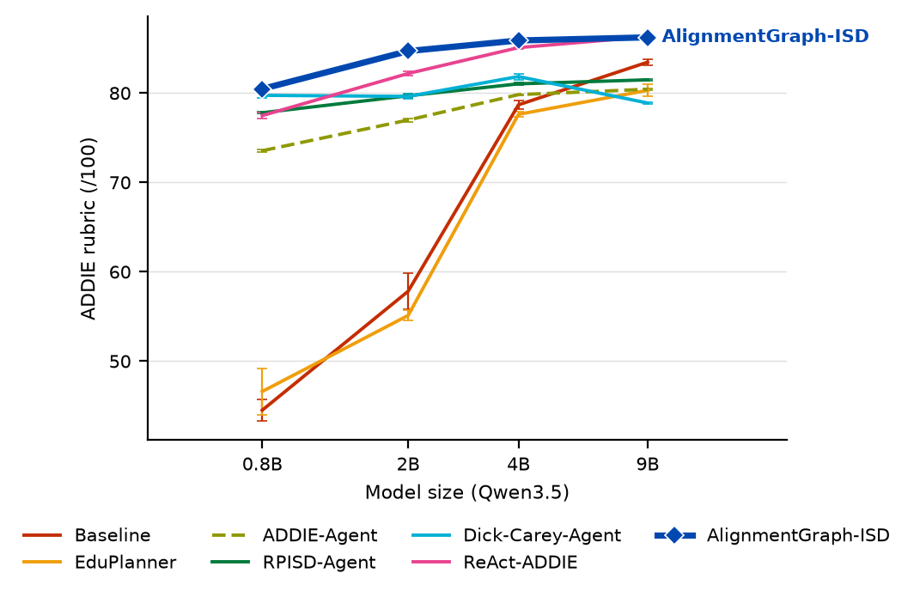
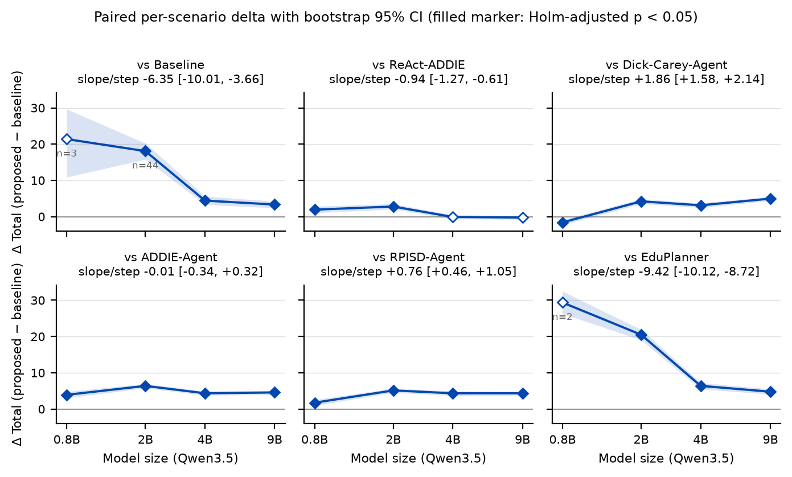
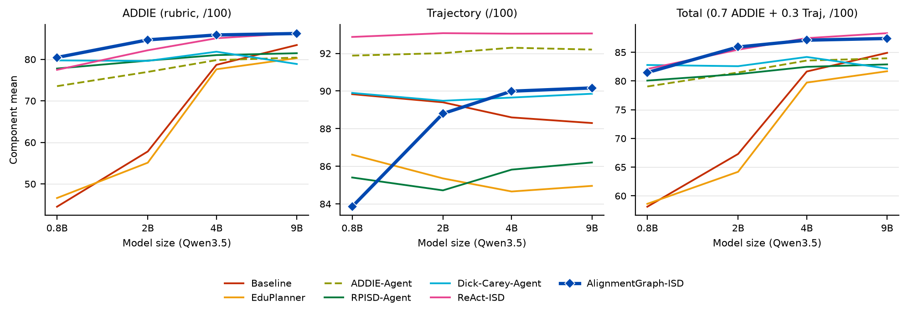
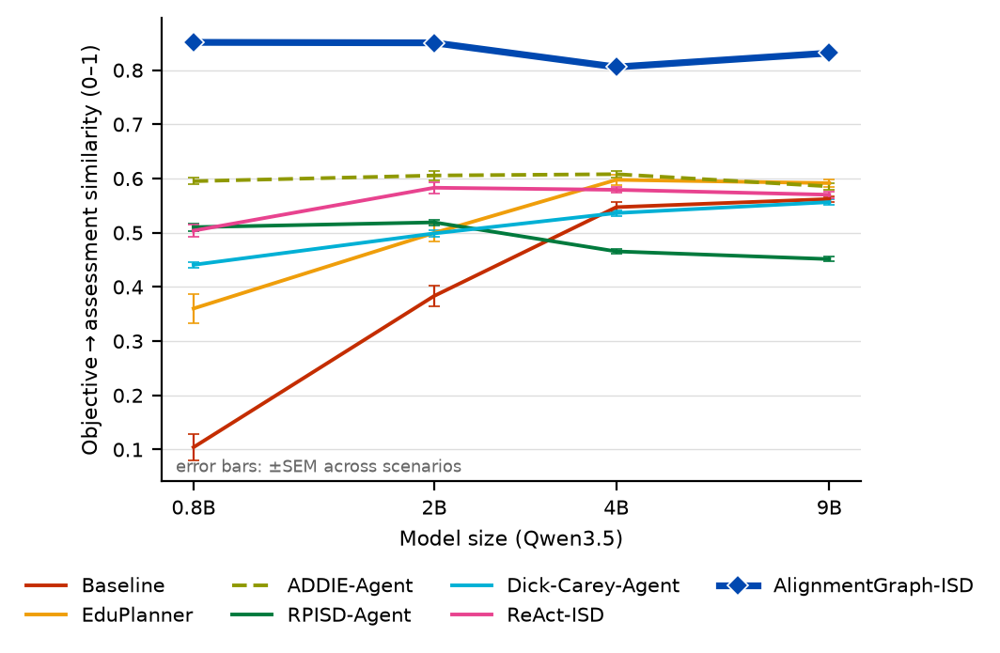
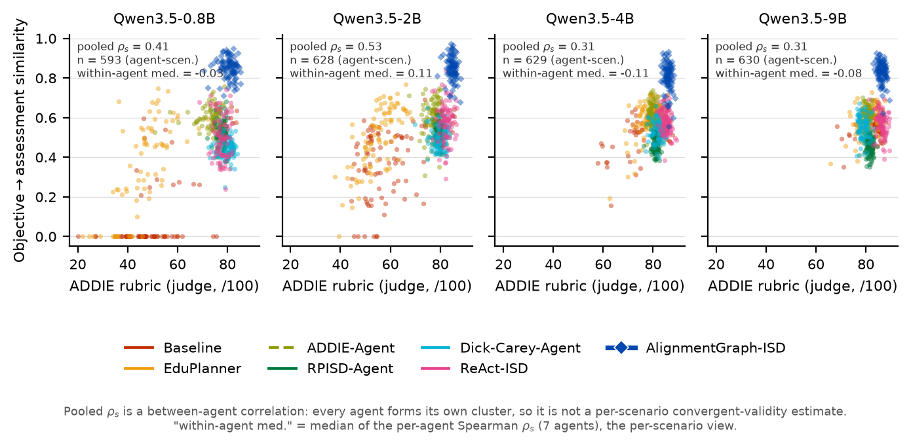
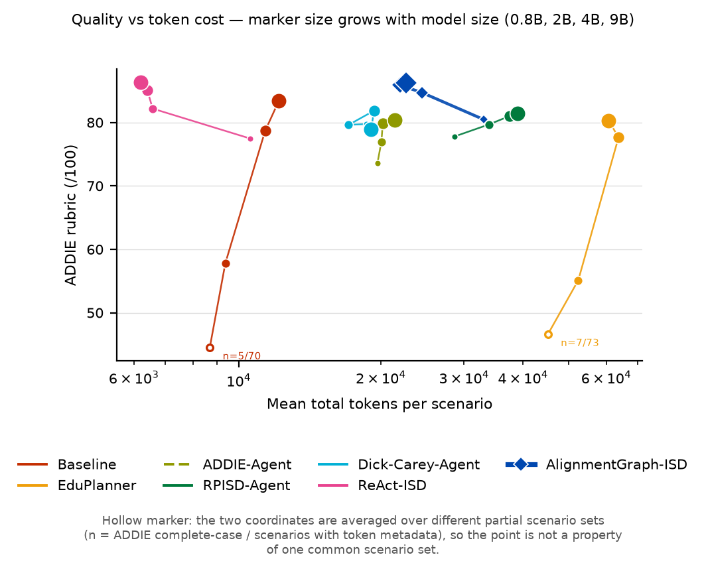

Duy trì chất lượng thiết kế giảng dạy (ISD) khi thu nhỏ mô hình nền open-weight —
harness đa tác tử với alignment graph tường minh, kiểm được và audit được
Nội dung: paper dự định submit · quá trình setup thực nghiệm · kết quả ladder 22–23/07
Học viên: Bùi Việt Phương · ~30 phút
Bối cảnh & khoảng trống nghiên cứu
Bối cảnh
LLM thương mại sinh chương trình giảng dạy tốt, nhưng chi phí API + dữ liệu người học đi qua bên thứ ba cản trở triển khai tại cơ sở giáo dục.
Open-weight SLM triển khai tại chỗ = cân bằng thực tế hơn giữa chất lượng · chi phí · kiểm soát dữ liệu.
Model càng nhỏ, chất lượng hệ thống càng phụ thuộc vào harness — khung điều phối, quản lý trạng thái, kiểm soát chất lượng.
Khoảng trống
Gap 1: duy trì chất lượng khi thu nhỏ mô hình nền chưa được nghiên cứu như một mục tiêu thiết kế & đánh giá của hệ tác tử ISD.
Gap 2:constructive alignment — tiêu chí định nghĩa thành công của thiết kế giảng dạy — chưa được đo trực tiếp bằng thước đo định lượng, tự động, không dùng LLM judge.
Công trình lân cận: Small Models Big Support (SLM hỗ trợ soạn nội dung), LessonPlanLM (fine-tune 7B), Instructional Agents (vẫn API thương mại).
Câu hỏi nghiên cứu & đóng góp
Research questions
RQ1 — Quality retention theo model scale: chất lượng đầu ra của AlignmentGraph-ISD thay đổi thế nào trên dải Qwen 0.8B → 9B, so với các hệ tác tử đối sánh?
RQ2 — Alignment đo trực tiếp: đầu ra có mức constructive alignment cao hơn đối sánh không, và khoảng cách có nới rộng khi model nhỏ đi không?
Ba đóng góp
C1AlignmentGraph-ISD — harness đa tác tử với alignment graph là trạng thái alignment tường minh, kiểm được, audit được cho bài toán sinh chương trình ADDIE.
C2Alignment metric — mở rộng ISD-Agent-Bench với thước đo constructive alignment định lượng, không LLM (Porter index + Webb criteria + embedding coverage).
C3Bằng chứng thực nghiệm về scale — đánh giá có kiểm soát trên Qwen cùng họ 0.8B/2B/4B/9B, mỗi size 3 run, cho cả judge quality lẫn alignment.
Giả thuyết thiết kế: SLM yếu với tác vụ mở & đa ràng buộc → thu hẹp tác vụ mỗi lời gọi model (phân rã theo mối quan tâm ISD) + substrate chung để các mảnh sinh riêng vẫn ăn khớp về sư phạm.
Phương pháp — AlignmentGraph-ISD harness
Ý tưởng cốt lõi: thu hẹp tác vụ mỗi lời gọi model (phân rã theo mối quan tâm ISD) + mọi quan hệ alignment là node/edge tường minh để verifier kiểm được và educator audit được — thay vì ẩn trong văn xuôi của một prompt lớn.
Auditability (C1) & Alignment metric (C2)
Graph dump — auditability
Cuối mỗi run: dump toàn bộ đồ thị (node/edge/state, JSON + Graphviz DOT) thành artifact riêng, tách khỏi trajectory.
Educator kiểm được: mục tiêu nào được đo bởi đánh giá nào, hỗ trợ bởi hoạt động nào → can thiệp / override khi cần.
Định vị: decision support cho chuyên gia ISD (educator-in-the-loop), không thay thế chuyên gia.
Alignment metric — định lượng, không LLM
Thành phần: Porter Alignment Index + Webb criteria (range, Bloom consistency) + embedding coverage/precision.
Độc lập ở cơ chế chấm: chỉ đọc text đầu ra — không gọi LLM, không dùng nhãn/ID tự khai → tránh vòng tròn LLM-judge & self-declared labels.
Giới hạn khai báo thẳng: không độc lập về construct với harness (chủ đích thiết kế) → thứ hạng được corroborate bằng judge rubric (RQ1).
Chấm offline trên output đã lưu của mọi agent — không cần chạy lại.
Số trong paper sinh tự động từ pooled artifacts — không gõ tay.
Kết quả 23/07 — 1/6
Robustness: bằng chứng mạnh nhất

Tỉ lệ scenario hỏng (không có output dùng được) theo model size
AlignmentGraph-ISD: 0 failure — output dùng được cho 100% của 12 run × 90 scenario, ở mọi size.
Ở 0.8B: baseline hỏng 87/90, eduplanner 88/90 scenario (union 3 run); ở 2B còn 46/90 và 31/90.
Fisher exact (Holm): p ≤ 2×10⁻¹⁰ ở mọi ô có ý nghĩa — ở model nhỏ, hệ không có scaffold phần lớn không chạy được.
Confound khai báo: trần 8096 token/call dùng chung — một phần failure của baseline có thể là truncation, nhưng vẫn là failure ở cấp hệ thống.
Kết quả 23/07 — 2/6
RQ1 — Total score theo model ladder

Total = 0.7·ADDIE + 0.3·Trajectory, mean-of-3-runs, per-scenario
Agent
0.8B
2B
4B
9B
alignmentgraph
79.8
84.3
85.4
86.2
react-isd
77.9
81.5
85.5
86.5
dick-carey
81.4
80.1
82.3
81.3
rpisd
78.1
79.2
81.1
81.9
addie-agent
75.9
77.9
81.1
81.7
baseline
59.4 ⁿ⁼³
66.7
81.1
82.9
eduplanner
51.3 ⁿ⁼²
63.7
79.2
81.7
Đường của harness cao và phẳng: 79.8 → 86.2 (Δ = 6.4 điểm qua 11× tham số).
Baseline/eduplanner sụp ở 0.8B–2B (và n complete-case rất nhỏ).
Kết quả 23/07 — 3/6
RQ1 — Paired stats: trung thực hai chiều

ΔTotal (harness − đối thủ), Wilcoxon + Holm, complete-case
Thắng có ý nghĩa: addie + rpisd ở cả 4 size; dick-carey ở 2B–9B; react-isd ở 0.8B–2B; baseline/eduplanner từ 2B↑.
Hòa react-isd ở 4B–9B (Δ ≈ 0, ns) — workflow 2-call, ~1/3 token, đủ cho Total ở model lớn.
Thua dick-carey ở 0.8B (−1.59, p=3.7×10⁻⁴) — cấu trúc nói chung giúp model nhỏ, không riêng harness này.
"Bù scale" dạng defensible: lợi thế vs react-isd co lại khi model lớn (DiD −2.17, p=1.3×10⁻⁴); delta vs baseline/eduplanner ở 0.8B = +36→+60 chỉ dưới sensitivity imputation.
Kết quả 23/07 — 4/6
RQ1 — Thành phần: ADDIE vs Trajectory

ADDIE (trái) và Trajectory (phải) theo model size
Dẫn đầu ADDIE ở cả 4 size (80.4 → 86.0) — chất lượng nội dung giảng dạy nằm ở đây.
react-isd dẫn Trajectory (BFCL thưởng workflow ngắn 2-call) nhưng thua ADDIE rõ ở model nhỏ (73.5 vs 80.4 ở 0.8B).
Ở 0.8B, dick-carey chỉ ngang ADDIE (80.1 vs 80.4) nhưng thua xa alignment (0.445 vs 0.759 — slide sau).
→ Total hòa ở model lớn, nhưng lợi thế của harness nằm ở ADDIE + alignment, không ở điểm quy trình.
Kết quả 23/07 — 5/6
RQ2 — Constructive alignment (metric LLM-free)

Composite alignment (0–1), pooled 3 run/size
Dẫn đầu cả 4 size: 0.76 / 0.74 / 0.71 / 0.73 — á quân (dick-carey) chỉ 0.45–0.65.
Gap vs á quân nới rộng khi model nhỏ đi: 0.079 (9B) → 0.239 (0.8B) — đúng vế hai của RQ2.
Thứ hạng giữ nguyên khi conditional-on-parseable (chỉ xét output trích được objective) — không phải hiệu ứng "đối thủ hỏng output".
Thành phần metric theo size (Porter, Webb, embedding)

Alignment (RQ2) vs judge ADDIE (RQ1) — hai instrument đồng thuận
Webb range = 1.000 là by-construction (verifier enforce đúng quan hệ này) → vai trò manipulation check, không phải bằng chứng chất lượng độc lập — khai báo thẳng trong paper.
Đối trọng: thứ hạng RQ2 được corroborate bằng instrument độc lập — judge ADDIE (dẫn đầu cả 4 size, scatter bên phải).
Chi phí vận hành

Token/scenario vs Total score — trade-off chi phí/chất lượng
Harness: 22–33k token, ~8.2–8.7 LLM call/scenario — gấp 1.9–3.9× baseline nhưng ít hơn eduplanner/rpisd.
Overhead giảm khi model lớn: 33.2k (0.8B) → 22.5k (9B); ít regen hơn (8.7 → 8.2 call).
react-isd ở 9B đạt Total tương đương với ~29% token → ở model lớn, lợi thế của harness là ADDIE + alignment + auditability, không phải Total.
Kết luận (đã hiệu chỉnh theo mức bằng chứng)
1 · Robustness: 100% output ở mọi size; baseline/eduplanner hỏng 87–88/90 (0.8B), 31–46/90 (2B) — ở SLM nhỏ, hệ không scaffold phần lớn không chạy được.
2 · Score: thắng các structured agent cùng lớp ở cả 4 size; dẫn ADDIE cả 4 size. Trung thực: hòa react-isd 4B–9B, thua dick-carey 0.8B (−1.59).
3 · Bù scale (defensible): lợi thế vs react-isd co lại khi model lớn (DiD −2.17); failure differential tập trung ở model nhỏ; delta 0.8B vs baseline/eduplanner chỉ claim dưới sensitivity imputation.
4 · RQ2: dẫn alignment cả 4 size (giữ khi conditional), gap nới rộng khi model nhỏ đi (0.079 → 0.239); giới hạn construct proximity đã khai báo, corroborate bằng judge.
Hạn chế & kế hoạch
Hạn chế: không ablation (các cơ chế coupling chặt → claim ở mức hệ thống); metric gần construct với verifier; failure baseline một phần có thể do truncation cap.
Kế hoạch: hoàn thiện bản thảo (số liệu sinh tự động đã sẵn) → submit IEEE TLT (fallback: EAIT); ETR&D để dành khi có expert study.
Cảm ơn thầy/cô — mong nhận góp ý về: mức claim của "bù scale", cách trình bày construct proximity của metric, và lựa chọn journal.